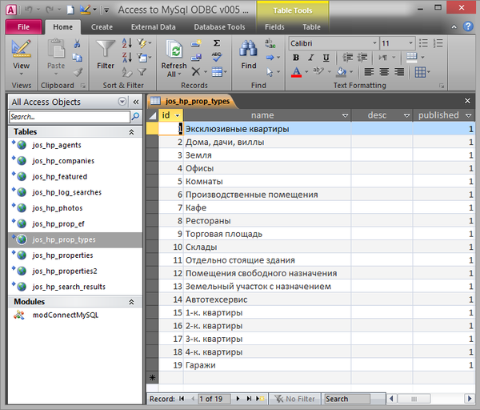

|
Подключение таблиц MySQL без DSN (ADOX или DAO) По материалам https://support.microsoft.com/en-us/kb/230588 Требует установки MySQL ODBC драйвера '-------------------------------------------------------------------- ' Module : modLinkTablesMySQL ' Author : es ' Date : 21.08.2016 ' Purpose : Подлинковка таблиц MySQL с автоматическим созданием DSN (ADOX или DAO) '-------------------------------------------------------------------------- 'Требуются ссылки на: ' Microsoft ADO Ext. for DDL and Security. (Version 2.1 or higher) ' Microsoft ActiveX Data Objects Library. (Version 2.1 or higher) '-------------------------------------------------------------------- Public Sub LinkTablesMySQL_ADOX() 'Создание общей строки подключения и подлинковка таблиц MySQL '-------------------------------------------------------------------------- Dim sDriver As String Dim sServerAdr As String Dim sServPort As String Dim sDbName As String Dim sUser As String Dim sPassWord As String Dim sConnect As String Dim l& '-------------------------------------------------------------------------- On Error GoTo LinkTablesMySQL_ADOX_Err 'Внимание - проверь версию драйвера! - Может уже... 5.5 или даже 6.2!? 'sDriver = "{MySQL ODBC 5.2 ANSI Driver}" 'ANSI Driver sDriver = "{MySQL ODBC 5.3 Unicode Driver}" 'UNICODE Driver
'sServerAdr = "localhost" sServerAdr = "127.0.0.1" ' Адрес (Имя) сервера sServPort = "3306" ' Порт соединения = 3306 (Обычно так и есть) sDbName = "codelibrary_db" ' Название базы sUser = "root" ' Имя пользователя sPassWord = "Pass_Word" ' Пароль 'Создаю строку подключения: sConnect = "ODBC;DRIVER=" & sDriver & _ ";SERVER=" & sServerAdr & _ ";Port=" & sServPort & _ ";DATABASE=" & sDbName & _ ";USER=" & sUser & _ ";PASSWORD=" & sPassWord & _ ";OPTION=3" '& _ ";stmt=set names cp1251" '";stmt=set names utf8" 'Debug.Print sConnect '-------------------------------------------------------------------- 'Подключаем несколько таблиц по ADOX l = LinkTable_ADOX("table_name_01", sConnect) If l > 0 Then Err.Raise l
l = LinkTable_ADOX("table_name_01", sConnect) If l > 0 Then Err.Raise l
l = LinkTable_ADOX("table_name_03", sConnect) If l > 0 Then Err.Raise l
'-------------------------------------------------------------------------- 'Подключаем пару таблиц по DAO l = LinkTable_DAO("table_name_04", sConnect, "table_name_04_DAO") If l > 0 Then Err.Raise l
l = LinkTable_DAO("table_name_05", sConnect, "table_name_05_DAO") If l > 0 Then Err.Raise l
LinkTablesMySQL_ADOX_Bye: Exit Sub LinkTablesMySQL_ADOX_Err: MsgBox "Ошибка " & Err.Number & vbCrLf & Err.Description & vbCrLf & "в процедуре: LinkTablesMySQL_ADOX", vbCritical, "Error in module modConnectMySQL_DAO" Resume LinkTablesMySQL_ADOX_Bye End Sub Private Function LinkTable_ADOX(stRemTName As String, strConnect As String, Optional sLocalTName As String = "") As Long 'es 21.08.2016 'Подлинковка таблички MySQL Server с автоматическим созданием DSN (ADOX) 'При удачном подключениии возвращает = 0 (ноль), при неудачном = КОД ОШИБКИ (номер) '------------------------------------------------------------------------- 'Аргументы: ' stRemTName = Имя таблицы на сервере ' strConnect = Строка подключения к серверу ' sLocalTName = Локальное Имя Таблицы '------------------------------------------------------------------------- Dim cat As New ADOX.Catalog Dim tbl As New ADOX.Table
On Err GoTo LinkTable_ADOX_Err 'Если локальное имя не указанно If sLocalTName = "" Then sLocalTName = stRemTName
'Открываем каталог текущей базы Set cat.ActiveConnection = CurrentProject.Connection
'Если таблица с таким названием уже существует - Удаляем For Each tbl In cat.Tables If tbl.Name = sLocalTName Then cat.Tables.Delete tbl.Name Next
'Установка параметров таблицы With tbl .Name = sLocalTName Set .ParentCatalog = cat .Properties("Jet OLEDB:Link Provider String") = strConnect .Properties("Jet OLEDB:Remote Table Name") = stRemTName .Properties("Jet OLEDB:Create Link") = True End With
'Создаём новый обьект cat.Tables.Append tbl 'Обновляем список таблиц cat.Tables.Refresh CurrentDb.TableDefs.Refresh DoEvents LinkTable_ADOX_Bye: Set cat = Nothing Set tbl = Nothing Exit Function LinkTable_ADOX_Err: LinkTable_ADOX = Err.Number Debug.Print "Error " & Err.Number & vbCrLf & Err.Description & vbCrLf & _ "in Function: esLinkTable_ADOX" Resume LinkTable_ADOX_Bye End Function Private Function LinkTable_DAO(sSourceTblName As String, sConnectStr As String, Optional sLocalTblName As String = "") As Long 'es - 29.12.2012 'Создаёт подлинкованную таблицу по параметрам подключения с автоматическим созданием DSN (DAO) 'При удачном подключениии возвращает = 0 (ноль), при неудачном = КОД ОШИБКИ (номер) '-------------------------------------------------------------------- 'Аргументы: ' sSourceTblName = Имя Таблицы Исходное (на сервере) ' sConnectStr = Строка подключения к серверу: ' sLocalTblTName = Локальное Имя Таблицы (по умолчанию = sSourceTblName) '-------------------------------------------------------------------- Dim tdf As New DAO.TableDef If sLocalTblName = "" Then sLocalTblName = sSourceTblName 'Удаляем старую подлинковку (если была) On Error Resume Next CurrentDb.TableDefs.Delete sLocalTblName Err.Clear
On Error GoTo LinkTable_DAO_Err 'Установка параметров создаваемой таблицы With tdf .Name = sLocalTblName .Connect = sConnectStr .SourceTableName = sSourceTblName End With
'Создаём новый обьект Таблица CurrentDb.TableDefs.Append tdf DoEvents CurrentDb.TableDefs.Refresh
LinkTable_DAO_Bye: On Error Resume Next Set tdf = Nothing Exit Function LinkTable_DAO_Err: LinkTable_DAO = Err.Number Debug.Print "Error " & Err.Number & vbCrLf & Err.Description & vbCrLf & _ "in procedure LinkTable_DAO", vbCritical, "Error!" Resume LinkTable_DAO_Bye End Function
 Achtung! |
||
|
|
|